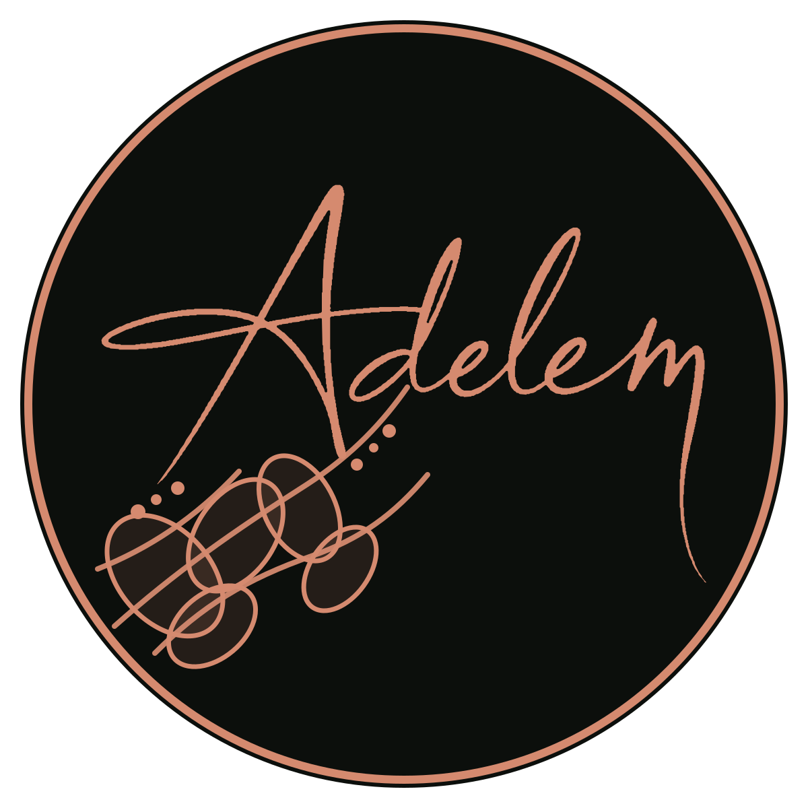

Le végétal
autrement
Végétaux naturels stabilisés · cadres anciens · travail à la main
Voir les œuvres

Matière
Mousse, feuillage, bois, champignons. Des textures, des creux, des accidents. La composition commence par ce que la matière donne.
Le geste
Chercher, restaurer, composer, déplacer, retirer, recommencer. Certaines pièces demandent plusieurs jours avant que l’équilibre apparaisse.

Œuvres
Chaque pièce possède sa propre échelle, sa propre tension, son propre rapport au cadre et à la matière.


Cadres anciens
Ils apportent leur époque, leurs proportions, parfois leurs accidents. La composition naît avec eux, jamais après eux.

Sculptures
Une autre manière de travailler la présence, le relief et la main.

Sur mesure
L’espace donne la contrainte. Adelem garde la liberté de la composition.
Collections privées
Les œuvres qui ont trouvé leur lieu restent dans le corpus Adelem. Elles témoignent d’un chemin, sans jamais devenir des modèles à reproduire.
Voir les œuvres acquises →